Methodology¶
The expected content of the notebook:¶
- Detection of time series changes in daily questionnaire data about fatigue
Data - daily questionnaire data of James¶
[1]:
# import sys
# import os
# import warnings
import pandas as pd
# from pandas.io.json import json_normalize #package for flattening json in pandas df
# from ast import literal_eval
import numpy as np
import matplotlib.pyplot as plt
import seaborn as sns
from sklearn.preprocessing import MinMaxScaler
from sklearn.feature_selection import VarianceThreshold
# import CRD_functions as crd
from jmspack.NLTSA import (ts_levels,
distribution_uniformity,
fluctuation_intensity,
complexity_resonance,
complexity_resonance_diagram,
cumulative_complexity_peaks,
cumulative_complexity_peaks_plot)
import miceforest as mf
import session_info
Display the session info of the notebook¶
[2]:
session_info.show()
[2]:
Click to view session information
----- jmspack 0.0.3 matplotlib 3.3.4 miceforest NA numpy 1.19.2 pandas 1.2.3 seaborn 0.11.1 session_info 1.0.0 sklearn 0.24.1 -----
Click to view modules imported as dependencies
PIL 8.1.2 appnope 0.1.2 backcall 0.2.0 cffi 1.14.5 colorama 0.4.4 cycler 0.10.0 cython_runtime NA dateutil 2.8.1 decorator 4.4.2 ipykernel 5.3.4 ipython_genutils 0.2.0 ipywidgets 7.6.3 jedi 0.17.2 joblib 0.17.0 kiwisolver 1.3.1 mpl_toolkits NA parso 0.7.0 pexpect 4.8.0 pickleshare 0.7.5 pkg_resources NA prompt_toolkit 3.0.8 ptyprocess 0.7.0 pyexpat NA pygments 2.8.1 pyparsing 2.4.7 pytz 2021.1 scipy 1.5.3 six 1.15.0 statsmodels 0.12.2 storemagic NA tornado 6.1 traitlets 5.0.5 wcwidth 0.2.5 zmq 20.0.0
----- IPython 7.21.0 jupyter_client 6.1.7 jupyter_core 4.7.1 jupyterlab 2.2.6 notebook 6.2.0 ----- Python 3.9.2 (default, Mar 3 2021, 11:58:52) [Clang 10.0.0 ] macOS-10.16-x86_64-i386-64bit ----- Session information updated at 2021-07-18 16:14
[3]:
df = (pd.read_csv("data/user_351_smart_panel.csv")
.rename(columns={"Unnamed: 0": "date"})
.assign(date=lambda x: pd.to_datetime(x["date"]).dt.date)
.drop("user_id", axis=1)
.set_index("date")
)
[4]:
date_range = pd.date_range(df.reset_index().date.min(),
df.reset_index().date.max())
[5]:
df
[5]:
| validated_physical | validated_cognitive | validated_motivational | fatigue | slider | |
|---|---|---|---|---|---|
| date | |||||
| 2020-07-15 | 1.496997 | NaN | NaN | 1.385599 | NaN |
| 2020-07-18 | NaN | 3.428084 | NaN | 3.334602 | NaN |
| 2020-07-19 | NaN | 0.664916 | NaN | 0.646784 | NaN |
| 2020-07-20 | NaN | NaN | 1.532818 | 1.294205 | NaN |
| 2020-07-21 | 1.496997 | NaN | 0.766409 | 2.032702 | NaN |
| ... | ... | ... | ... | ... | ... |
| 2021-05-27 | NaN | NaN | 2.938475 | 2.481045 | NaN |
| 2021-06-01 | NaN | NaN | NaN | NaN | 63.0 |
| 2021-06-07 | NaN | 1.951801 | NaN | 1.898576 | NaN |
| 2021-06-08 | NaN | NaN | 2.938475 | 2.481045 | 57.0 |
| 2021-06-13 | NaN | 1.951801 | NaN | 1.898576 | NaN |
204 rows × 5 columns
[6]:
df = df.reindex(date_range)
[7]:
df.info()
<class 'pandas.core.frame.DataFrame'>
DatetimeIndex: 334 entries, 2020-07-15 to 2021-06-13
Freq: D
Data columns (total 5 columns):
# Column Non-Null Count Dtype
--- ------ -------------- -----
0 validated_physical 86 non-null float64
1 validated_cognitive 113 non-null float64
2 validated_motivational 77 non-null float64
3 fatigue 190 non-null float64
4 slider 62 non-null float64
dtypes: float64(5)
memory usage: 15.7 KB
[8]:
_ = plt.figure(figsize=(30, 7))
_ = sns.heatmap(data=df
.drop("slider", axis=1)
# .assign(date=lambda x: pd.to_datetime(x["date"]).dt.date)
# .set_index("date")
.T
)
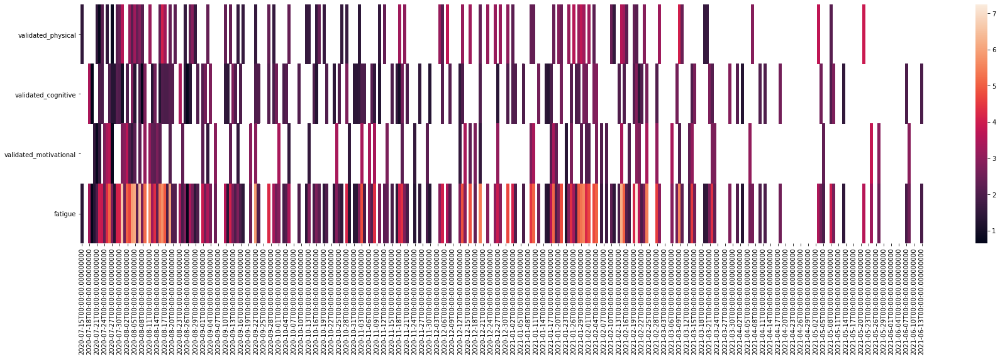
[9]:
current_feature = "fatigue"
[10]:
# _ = df.set_index("date", inplace=True)
Impute the missing data¶
Looking at linear interpolation first¶
[11]:
ts = df[current_feature].interpolate(method="polynomial", order=1)
[12]:
_ = plt.figure(figsize=(20, 5))
_ = plt.plot(ts, label=current_feature)
_ = plt.scatter(ts.index, ts.values, c="red")
_ = plt.scatter(df[current_feature].index, df[current_feature].values, c="green")
_ = plt.xticks(rotation=90)
_ = plt.legend()
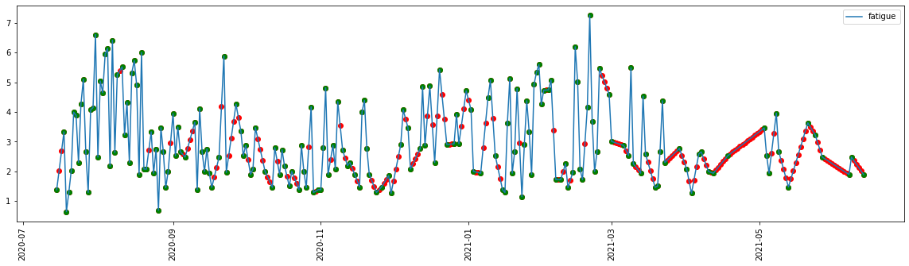
Deciding on the MICE algorithm in the end¶
[13]:
# Create kernel.
kds = mf.KernelDataSet(
df,
save_all_iterations=True,
random_state=1991
)
# Run the MICE algorithm for N amount of iterations
kds.mice(iterations = 10)
# Return the completed kernel data
completed_data = kds.complete_data()
[14]:
ts = completed_data[current_feature]
[15]:
_ = plt.figure(figsize=(20, 5))
_ = plt.plot(ts, label=current_feature)
_ = plt.scatter(ts.index, ts.values, c="red")
_ = plt.scatter(df[current_feature].index, df[current_feature].values, c="green")
_ = plt.xticks(rotation=90)
_ = plt.legend()
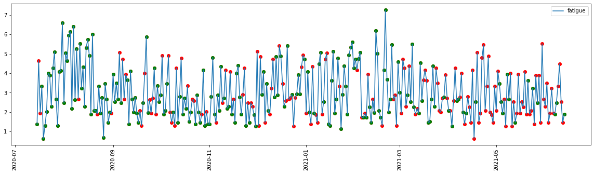
[16]:
ts_levels_df, _, _ = ts_levels(ts=ts.values,
ts_x=ts.index,
criterion='mse',
max_depth=3,
min_samples_leaf=1,
min_samples_split=2,
max_leaf_nodes=30,
plot=False,
equal_spaced=True,
n_x_ticks=10,
figsize=(20, 5))
[17]:
plot_df = ts_levels_df.drop("t_steps", axis=1).melt("ts_x")
[18]:
_ = plt.figure(figsize=(20, 5))
_ = sns.lineplot(data=plot_df, x="ts_x", y="value", hue="variable")
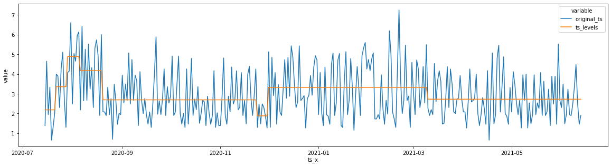
[19]:
def change_profile(x, window_size):
# window_size = 5
# x=ts
window_range = np.arange(0, len(x)-window_size, window_size)
cp_df = pd.DataFrame()
for window_begin in window_range:
window_mean = x.iloc[window_begin: window_begin + window_size].mean()
window_sum = x.iloc[window_begin: window_begin + window_size].sum()
# current_cp_df = x.iloc[window_begin: window_begin + window_size] - window_mean
current_cp_df = (x.iloc[window_begin: window_begin + window_size] - window_sum) / window_size
cp_df = pd.concat([cp_df, current_cp_df])
return cp_df[0]
[20]:
ts_cp = change_profile(ts, window_size=6)
[21]:
ts_levels_df, _, _ = ts_levels(ts=ts_cp.values,
ts_x=ts_cp.index,
criterion='mse',
max_depth=3,
min_samples_leaf=1,
min_samples_split=2,
max_leaf_nodes=30,
plot=False,
equal_spaced=True,
n_x_ticks=10,
figsize=(20, 5))
[22]:
plot_df = ts_levels_df.drop("t_steps", axis=1).melt("ts_x")
[23]:
_ = plt.figure(figsize=(20, 5))
_ = sns.lineplot(data=plot_df, x="ts_x", y="value", hue="variable")
_ = plt.ylabel("Fatigue Change Profile")
_ = plt.xlabel("Date")
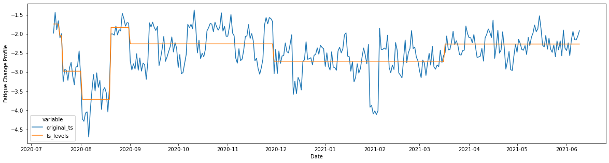
[24]:
plot_df = (ts_levels_df
.drop(["t_steps"], axis=1)
.rename(columns={"original_ts": "Fatigue_Change_Profile",
"ts_levels": "Fatigue_levels",
"ts_x": "Date"})
.assign(Date=lambda x: x["Date"].astype(str))
.set_index("Date")
)
[25]:
_ = plt.figure(figsize=(20, 3))
_ = sns.heatmap(plot_df.T)
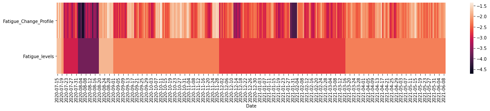
[26]:
fi_df = pd.DataFrame(fluctuation_intensity(pd.DataFrame(ts_cp), win=7, xmin=0, xmax=1, col_first=1, col_last=1)).rename(columns={0: current_feature})
[27]:
di_df = pd.DataFrame(distribution_uniformity(pd.DataFrame(ts_cp), win=7, xmin=0, xmax=1, col_first=1, col_last=1)).rename(columns={0: current_feature})
[28]:
cr_df = complexity_resonance(fi_df, di_df).rename(columns={0: current_feature})
[29]:
_ = complexity_resonance_diagram(fi_df, cmap_n=12, plot_title='Fluctuation Intensity Diagram', labels_n=7, figsize=(20, 3))
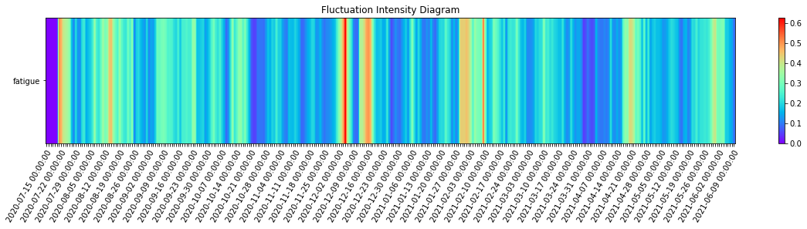
[30]:
_ = complexity_resonance_diagram(di_df, cmap_n=12, plot_title='Distribution Uniformity Diagram', labels_n=7, figsize=(20, 3))
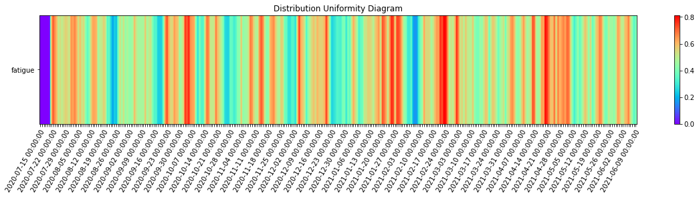
[31]:
_ = complexity_resonance_diagram(cr_df, cmap_n=12, plot_title='Complexity Resonance Diagram', labels_n=7, figsize=(20, 3))
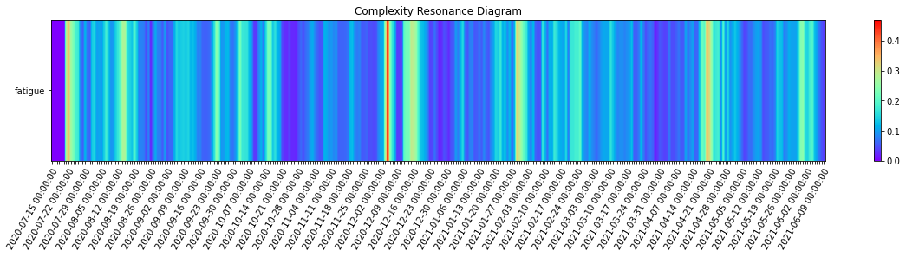
[32]:
cumulative_complexity_peaks_df, significant_peaks_df = cumulative_complexity_peaks(df=cr_df,
significant_level_item = 0.05,
significant_level_time = 0.05)
[33]:
_ = cumulative_complexity_peaks_plot(cumulative_complexity_peaks_df=cumulative_complexity_peaks_df,
significant_peaks_df=significant_peaks_df,
figsize = (20, 3),
height_ratios = [1, 3],
labels_n = 7)
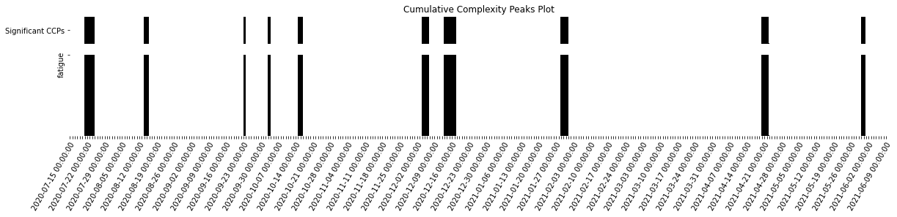
[34]:
significant_peaks_df[significant_peaks_df["Significant CCPs"]==1]
[34]:
| Significant CCPs | |
|---|---|
| 2020-07-21 | 1.0 |
| 2020-07-22 | 1.0 |
| 2020-07-23 | 1.0 |
| 2020-07-24 | 1.0 |
| 2020-08-14 | 1.0 |
| 2020-08-15 | 1.0 |
| 2020-09-23 | 1.0 |
| 2020-10-03 | 1.0 |
| 2020-10-15 | 1.0 |
| 2020-10-16 | 1.0 |
| 2020-12-04 | 1.0 |
| 2020-12-05 | 1.0 |
| 2020-12-06 | 1.0 |
| 2020-12-13 | 1.0 |
| 2020-12-14 | 1.0 |
| 2020-12-15 | 1.0 |
| 2020-12-16 | 1.0 |
| 2020-12-17 | 1.0 |
| 2021-01-29 | 1.0 |
| 2021-01-30 | 1.0 |
| 2021-01-31 | 1.0 |
| 2021-04-20 | 1.0 |
| 2021-04-21 | 1.0 |
| 2021-04-22 | 1.0 |
| 2021-05-30 | 1.0 |
| 2021-05-31 | 1.0 |
Running the CRDs on all the columns out of curiosity (not very reliable due to amount of missingness)¶
[35]:
df.info()
<class 'pandas.core.frame.DataFrame'>
DatetimeIndex: 334 entries, 2020-07-15 to 2021-06-13
Freq: D
Data columns (total 5 columns):
# Column Non-Null Count Dtype
--- ------ -------------- -----
0 validated_physical 86 non-null float64
1 validated_cognitive 113 non-null float64
2 validated_motivational 77 non-null float64
3 fatigue 190 non-null float64
4 slider 62 non-null float64
dtypes: float64(5)
memory usage: 23.8 KB
[36]:
completed_data.info()
<class 'pandas.core.frame.DataFrame'>
DatetimeIndex: 334 entries, 2020-07-15 to 2021-06-13
Freq: D
Data columns (total 5 columns):
# Column Non-Null Count Dtype
--- ------ -------------- -----
0 validated_physical 334 non-null float64
1 validated_cognitive 334 non-null float64
2 validated_motivational 334 non-null float64
3 fatigue 334 non-null float64
4 slider 334 non-null float64
dtypes: float64(5)
memory usage: 23.8 KB
[37]:
# completed_data.describe()
[38]:
scal_df = pd.DataFrame(MinMaxScaler().fit_transform(completed_data),
columns = completed_data.columns,
index = completed_data.index)
[39]:
fi_df = pd.DataFrame(fluctuation_intensity(scal_df, win=7, xmin=0, xmax=1, col_first=1, col_last=completed_data.shape[1]))#.rename(columns={0: current_feature})
[40]:
di_df = pd.DataFrame(distribution_uniformity(scal_df, win=7, xmin=0, xmax=1, col_first=1, col_last=completed_data.shape[1]))#.rename(columns={0: current_feature})
[41]:
cr_df = complexity_resonance(fi_df, di_df)#.rename(columns={0: current_feature})
[42]:
_ = complexity_resonance_diagram(fi_df, cmap_n=12, plot_title='Fluctuation Intensity Diagram', labels_n=7, figsize=(20, 3))
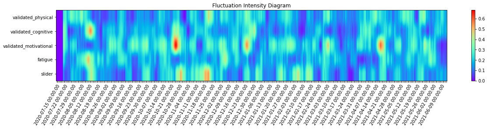
[43]:
_ = complexity_resonance_diagram(di_df, cmap_n=12, plot_title='Distribution Uniformity Diagram', labels_n=7, figsize=(20, 3))
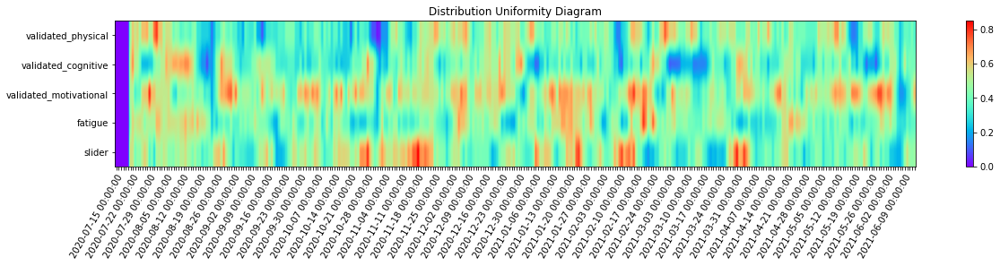
[44]:
_ = complexity_resonance_diagram(cr_df, cmap_n=12, plot_title='Complexity Resonance Diagram', labels_n=7, figsize=(20, 3))
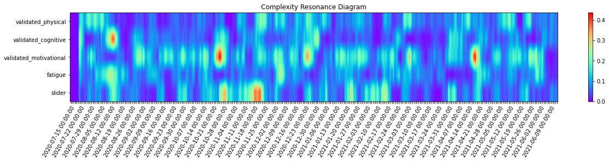
[45]:
cumulative_complexity_peaks_df, significant_peaks_df = cumulative_complexity_peaks(df=cr_df,
significant_level_item = 0.05,
significant_level_time = 0.05)
[46]:
_ = cumulative_complexity_peaks_plot(cumulative_complexity_peaks_df=cumulative_complexity_peaks_df,
significant_peaks_df=significant_peaks_df,
figsize = (20, 3),
height_ratios = [1, 3],
labels_n = 7)

[ ]: